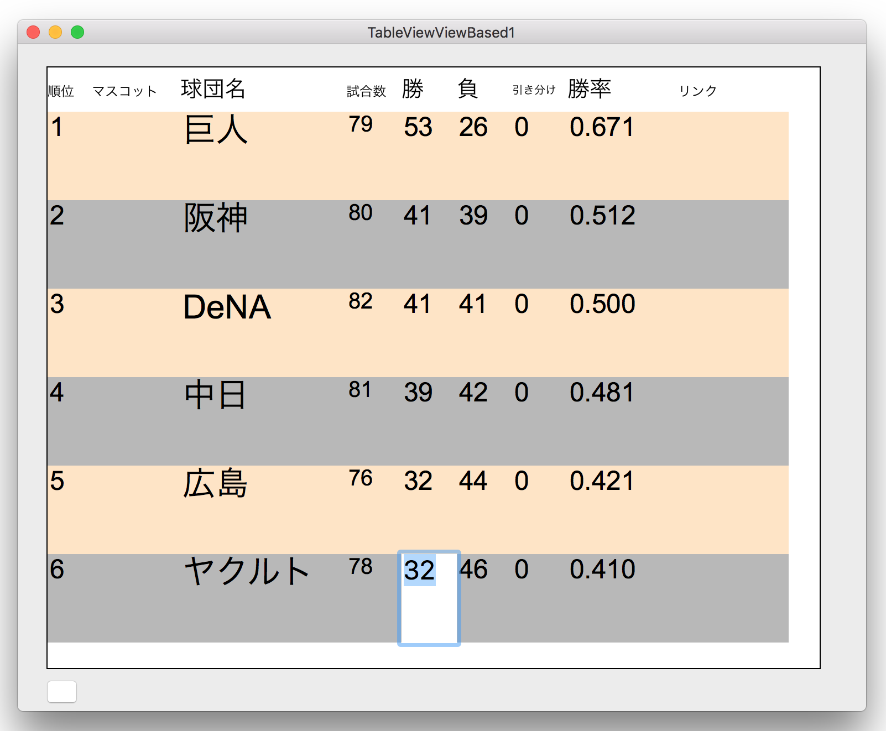

Cell Based テーブルビュー・データを更新する

テーブルビューのデータを更新する（View Based）に相当する機能を Cell Basedのテーブルビューで実装する。ただし制約により表示オブジェクトの位置揃えと、イメージの表示、リンクボタンの表示は実装していない。
Cell Based テーブルビューのクラス構造
Cell Basedのテーブルビューは、NSTextFieldCellクラス（またはそのサブクラス）のオブジェクトを通してセルに値を表示するものである。
オーソドックスな実装方法は、次の二つのNSTableViewDataSourceプロトコルに準じたメソッドを記述することである。
一般的にCellBasedのテーブルビュー表示するオブジェクトは文字列（属性付きを含む）である。セルのクラスは規定値として NSTextFieldCellクラスが埋め込まれていて、内部的にはDataSourceメソッドから渡ってくる文字列をTextFieldに表示するという仕組みのようだ。
次は、NSTableViewDelegateメソッドにより偶数行/奇数行の背景色を変えている。この操作を有効にするには、TextFieldCellオブジェクトのdrawsBackgroundプロパティをYESにすること。
このメソッドにより取得できるNSTextFieldCellクラスのオブジェクトに操作を加えればイメージをセルに表示する、セルの中で文字列の表示位置を変えるということも可能である。ただし、Cellに直接描画するというやや稀有な方法が求められるため、実際にどこまでできるか詳しい検証はしていない。
これは列見出し（NSTableHeaderCellクラス）の編集とほぼ同等な方法である。
結論としては、レイアウトの自由度や拡張性を求めるのであれば、View Basedのテーブルビューを選択するのが常道であろう。逆にCell Basedのテーブルビューは比較的実装が容易なので、テキストのみの表示で見た目に拘らなのであれば充分利用できる。
なお CellBasedのテーブルビューにイメージを表示させる方法についてはCell Based テーブルビューにイメージを表示するを参照されたい。
セルの値を変更しデータソースに反映するにはつぎのデリゲートメソッドが利用できる。
クラス一覧
UATableView 列見出しの編集
UATableHeaderCell 列見出しの編集
UAUtility ユーティリティ・メソッド
UATeam チーム成績